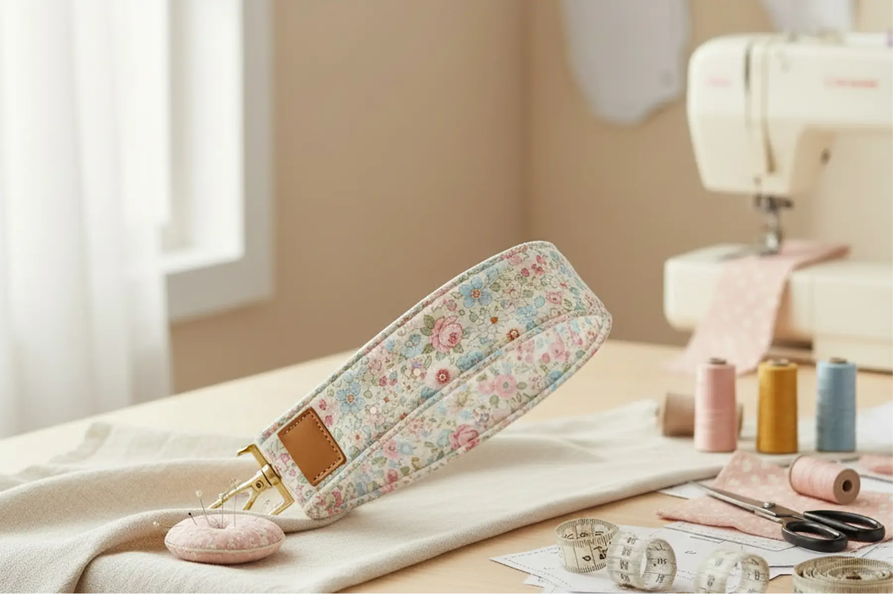
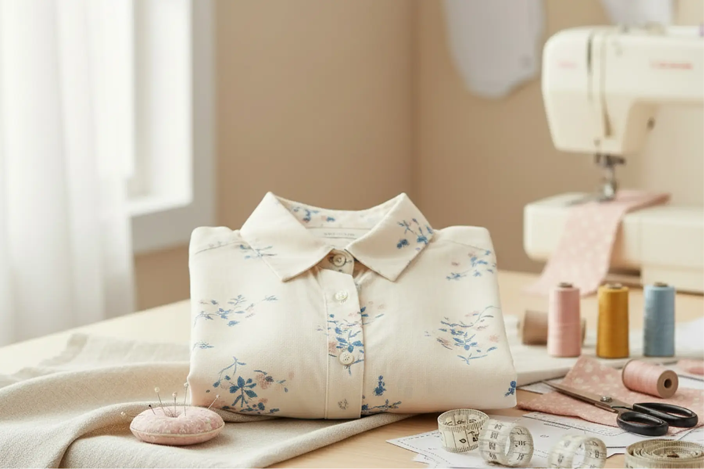
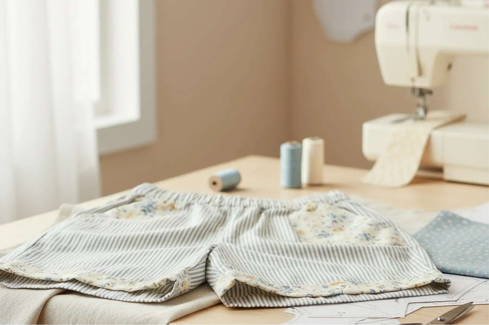
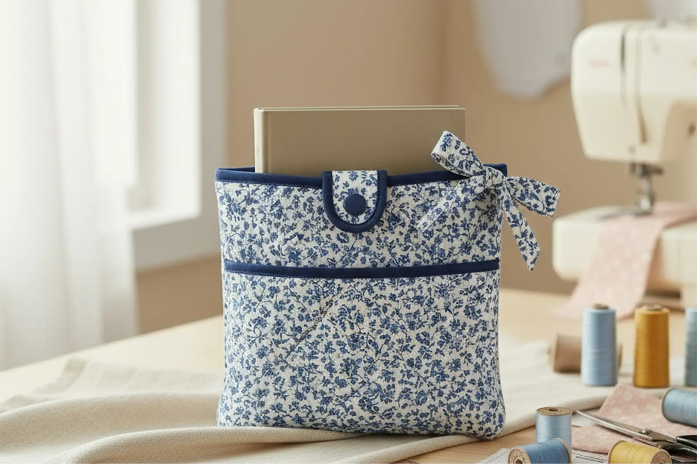
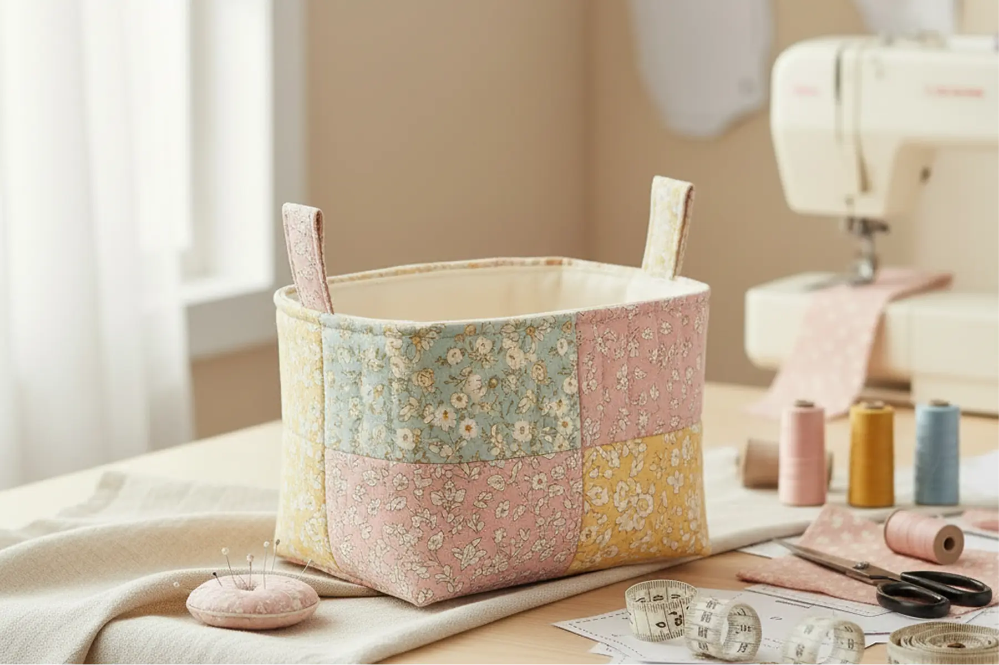
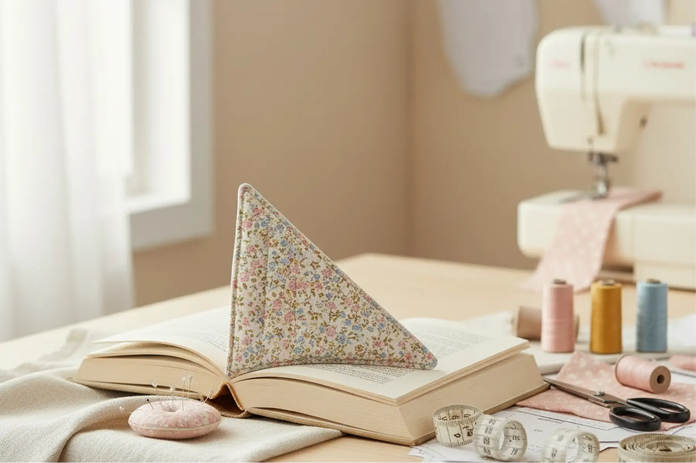

Nøglering
Simpelt og enkelt syprojekt til personliggørelse af dit nøglesæt

Skjorte
Højere sværhedsgrad for syersken der leder efter en udfordring

Shorts
Nemt syprojekt til et par behagelige sommerhorts

Bogsleeve
En gave til bogormen, der læser på farten

Stofkurv
Praktisk kurv til småopbevaring

Bogmærke
Lille ekstra gave til bogormen